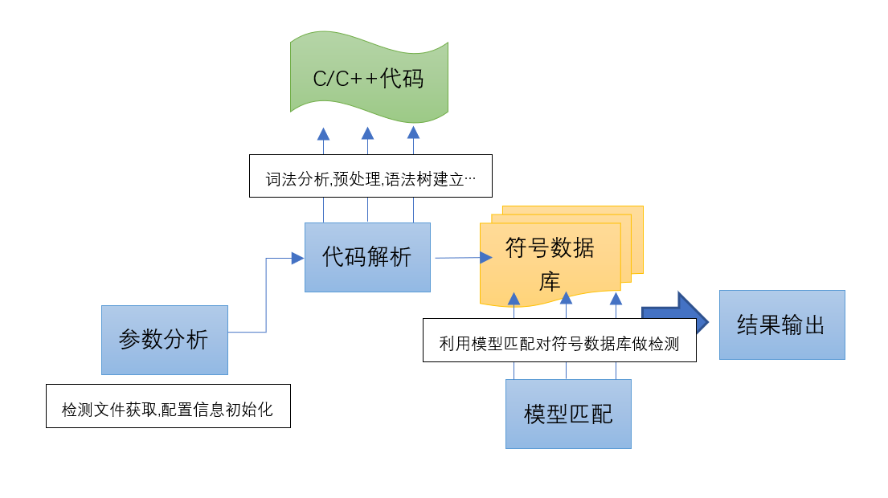

代码审计之CppCheck
前言
这段时间由于工作原因需要实现一款源代码分析工具，在网上搜刮了一波发现一款名叫cppcheck的源代码工具挺不错。还有一款叫TscanCode的也蛮好不过是基于cppcheck写的，并且最后的更新在18年，而cppcheck最近还在更新，所以就选择直接分析cppcheck的整体架构。
首先我们来了解一下什么是cppcheck，它是一款对于C/C++代码做静态扫描工具，力求发现源码中存在的一些漏洞，目前支持以下几种类型规则的扫描(只是简单列出一些,还有许多感兴趣的可以下载看看)：
架构分析
分析开源软件我们首先要了解这个软件的整体架构，这里我打算先从文件结构入手。cppcheck总共分为两个模块，我叫它为前端模块，核心模块。前端模块主要通过对用户的输入(命令行)做分析，得到用户想要的选项，然后把这些选项保存到一个Setting类中。然后解析用户需要分析的文件路径，如果该路径属于一个目录则遍历获取该目录下的所有符合的文件作为目标，保存起来用作后续的分析，如果用户直接给出了目标路径那么直接用就行。
完成对目标文件列表的获取之后通过循环遍历把单个文件传给核心模块进行源码分析，分析完成后生成AST（抽象语法树）和符号数据库，利用内置的检测方案类挨个对该符号数据库做模型匹配检查，如果存在相同则判定存在漏洞，通过日志输出模块返回给用户。不断遍历直到所有文件都检查完毕。如果后续需要添加别的检测也挺方便，直接按照原有检测类的格式写一个自己的类就行。
各个类的含义
公共模块
- Settings::[字段用来存放用户的选项]
- ErrorLogger::class[基类:输入输出模块]
前端处理模块(处理用户参数)
- CppCheckExecutor::class[结合CmdLineParse类初始化Settings类中的成员选项，获取检测文件列表，循环调用CppCheck类的检测接口对文件做检测操作]
- CmdLineParse::class[解析命令行参数,初始化Settings类成员]
- ThreadExecutor::class[多线程类,多线程检测]
中间处理模块 <- 日志输出模块
- CppCheck::class[负责对前端模块传入的文件做符号化处理,生成语法树,符号数据库,调用后端检测模块]
- Token::class[对目标文件做简单的分词处理,生成单个token]
- TokenList::class[一个tokenlist表示一个检测文件,由多个token构成]
- Preprocess::class[预处理类]
- Tokenizer::class[更复杂的tokenlist结果，用来生成语法树,数据库列表]
数据模块 - SymbolDatabase::class[符号数据库类，记录程序中所有变量，函数范围，类和结构体范围等信息]
后端处理模块(负责检查)
- check::class[所有检测类的基类]
- check**:class….[各种检测类，继承check]
大概流程
一:前端模块
- 1.解析命令行初始化Settings类
- 2.加载内置cfg配置文件
- 3.获取检查文件列表
- 4.循环遍历检查文件传入给核心模块
二:核心模块
- 1.对前端传入的文件名做基础检查
- 2.词法分析以及预处理
- 2.1.通过simplecpp::TokenList的初始化对源文件做词法分析生成tokens1
- 2.2.通过preprocessor.loadFiles获取源文件的头文件,并对非系统库头文件做分词处理
- 2.3.预处理token:删除注释,处理asm指令,替换宏操作(removeComments && setDirectives &&
- 3.语法分析，生成Tokenizer实例
- 3.1.整合前面的词法树，建立token双向链表(mTokenizer.createTokens)
- 4.建立语法树，建立符号数据库(simplifyTokens1)
- 4.1.第一次简化token双向列表,各种检查,删除一些没用的token:(Tokenizer::simplifyTokenList1)
- 4.2.创建Ast语法树(createAst)
- 4.3.验证Ast语法树(validateAst)
- 4.5.创建符号数据库(createSymbolDatabase)
- 4.6.设置token列表中的类型(setValueTypeInTokenList)
- 5.遍历调用检测类注册的所有runcheck函数(checkNormalTokens)
- 6.二次简化(Tokenizer::simplifyTokenList2)
- 6.1.首先删除Ast语法树和符号数据库(deleteSymbolDatabase && clearAst())
- 6.2.对tokenlist各种优化(删除各种没用的冗余代码，变量简化，运算简化)
- 6.3.创建Ast语法树并验证(createAst && validateAst)
- 6.4.创建符号数据库(createSymbolDatabase)
- 7.遍历调用检测类注册的所有runSimplifiedChecks函数(checkSimplifiedTokens)
三:检测模块
- 1.调用各模块的检测函数
结果会通过ErrorLogger类输出到控制台(也可以指定选项写入到xml文件中)。
这里只是列了个大概流程还有许多编译原理的操作后续再研究研究。

方案分析
|
|
案例比较简单，大概的思路如下：
1.1.遍历所有函数(f1,f2)
1.2.获取每个函数所有变量定义并过滤掉不是数组定义的变量
1.3.通过ArrayInfo类记录每个数组定义的信息((数组元素个数,数组声明id等一系列信息))到arrayInfos列表中
1.4.对该函数(f1)中所有数组(arrayInfos)的使用做检查
1.5.检查到f1(x);这句时会发现这是把x数组做函数形参的使用，然后获取f1函数的信息
1.6.根据调用时形参x在参数列表中的索引,获取f1函数定义时对应索引的实参buf
1.7.遍历f1函数的操作，判断buf在该范围内的使用,如果属于[]取值操作则判断[B]中的数值B是否大于等于arrayInfos中保存的x数组定义时的值，如果大于则输出arrayIndexOutOfBoundsError信息
总结
分析开源软件时首先确定几个关键函数(关键点)，搞明白程序大概流程。然后再根据实际需求或对感兴趣的点向下扩展做详细分析。感觉从一开始就一个函数一个函数的调太慢了。不知道有没有什么快速分析的方法。
什么样的算是关键函数呢?（顶层函数??）
像剥洋葱一样一层一层的剥开。
阅读总结
1.先了解系统架构与行为模式，再细读。
2.阅读代码在于了解全貌而非细节。
3.从上而下理清楚架构，便于轻易理解组成关系。
4.根据需要了解细度，再决定展开层数。
5.在需要了解任何片段代码细节实现时，能很快在大脑中对应到具体的代码位置，才是继续细度代码的时机。
参考
https://wenku.baidu.com/view/b6a94afbaaea998fcd220e4b.html 架构分析
https://wenku.baidu.com/view/7d9804c7bb4cf7ec4afed0aa.html 架构分析(cppcheck的整体架构)
https://wenku.baidu.com/view/018b5a35a32d7375a41780ab.html 方案分析(cppcheck检查项的实现)
https://wenku.baidu.com/view/f2d913345a8102d276a22fc2.html 方案规则书写
Author: Let_go
Link: http://github.com/2019/04/22/代码审计之CppCheck/
Copyright: All articles in this blog are licensed under CC BY-NC-SA 3.0 unless stating additionally.